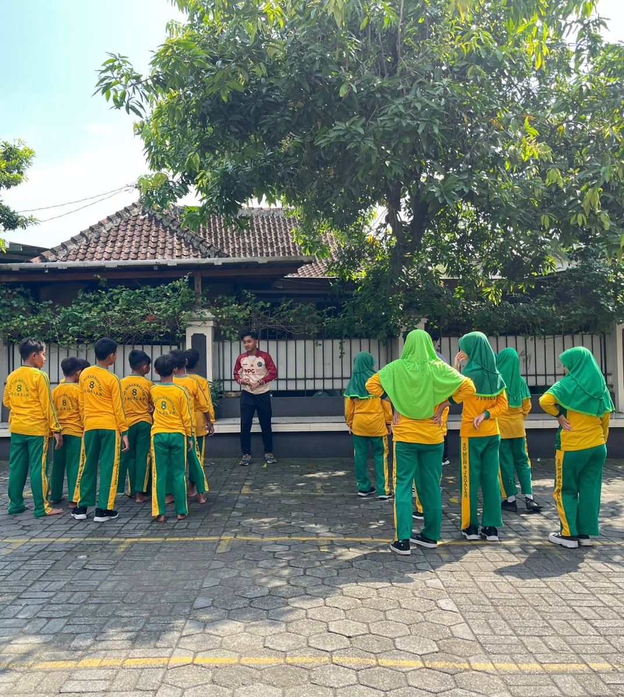
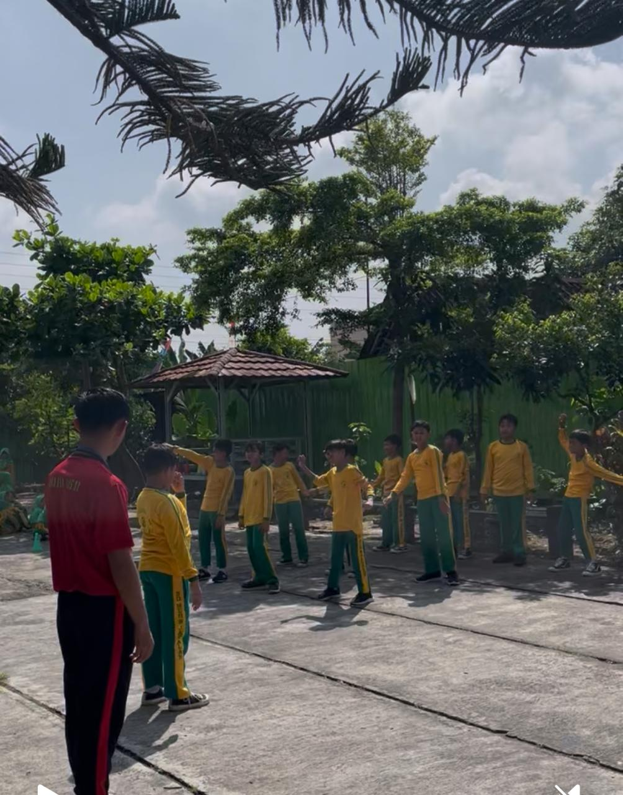
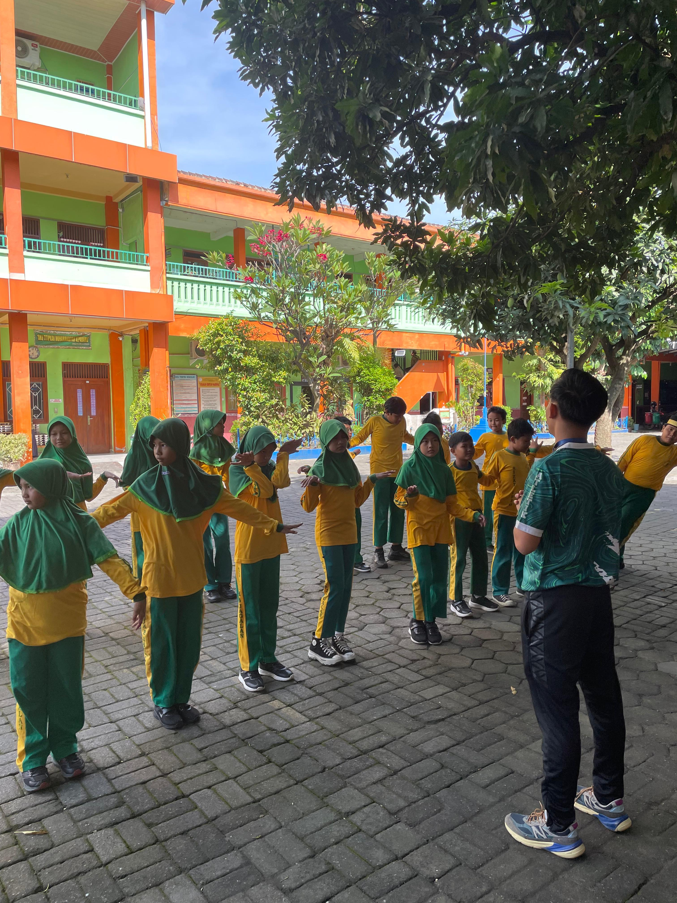

Kumpulan foto dokumentasi kegiatan pembelajaran, praktik mengajar, dan kegiatan PPG siklus 1, 2, dan 3

Dokumentasi praktik mengajar pada pertemuan pertama hingga ketiga dengan fokus pada gerak dasar kombinasi lari dan lempar, serta praktik kebersihan diri dan lingkungan.

Dokumentasi praktik mengajar pada pertemuan keempat hingga keenam dengan penekanan pada koordinasi gerak dan evaluasi pembelajaran berbasis permainan.

Dokumentasi praktik mengajar pada pertemuan ketujuh hingga kesembilan dengan fokus pada refleksi pembelajaran dan peningkatan kualitas mengajar.